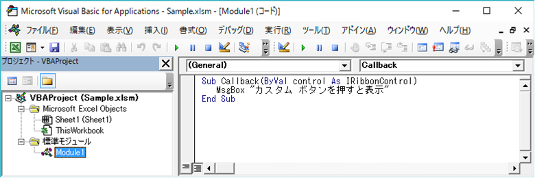
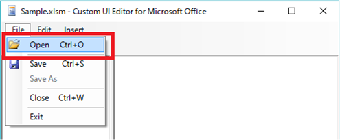
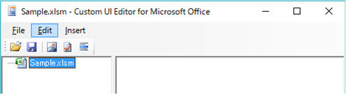
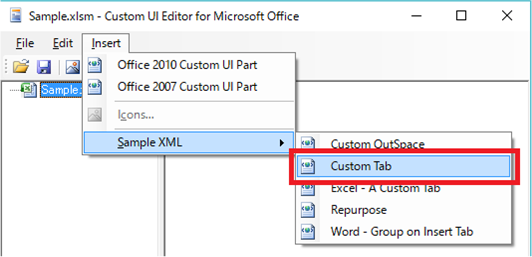
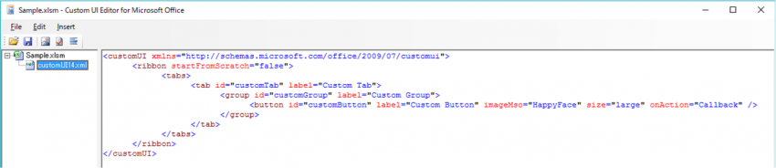
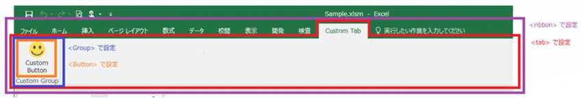

(※ 2017 年 3 月 6 日に Japan Office Developer Support Blog に公開した情報のアーカイブです。)
こんにちは、Office 開発 サポート チームの中村です。
今回の投稿は、前回に引き続き、リボンのカスタマイズについての投稿です。今回は、前回の投稿で紹介した 「a. OpenXML 形式のファイルにカスタム XML を追加してカスタマイズを行う」 方法について、サンプルの作成を通して手順とポイントの解説をしていきます。
ファイルにカスタム XML を追加してリボンをカスタマイズする
前回の投稿で説明したように、Excel, Word, PowerPoint の Office 2007 形式のファイルは Open XML 構造になっています。Open XML ファイル フォーマットでは、ファイル内容が記述された xml ファイルと、それらの関係性を表す rels ファイルで構成されています。
今回ご紹介するリボンのカスタマイズにおいて、ファイルの内部構造について隅々まで理解する必要はありませんが、興味のある方は以下の公開情報などをご参照ください。
タイトル : Office (2007) Open XML ファイル形式の概要
アドレス : https://msdn.microsoft.com/ja-jp/library/aa338205.aspx
この記事で紹介する方法では、Office ファイルに新しく独自のカスタム XML ファイルを追加し、ここに XML でリボンのカスタマイズ内容を記述します。そして、rels ファイルに「このカスタム XML ファイルにはリボンのカスタマイズ内容が書いてあるから、ファイルを開くときに XML を読み込んでリボンに反映する」という Office アプリケーションへの指示 (関連付け) を記述するという仕組みになっています。
では早速、実際に Excel でサンプルを作成しながらポイントを説明していきます。
今回のテーマ
今回の記事では、サンプルの作成を通して以下を実現する方法をお伝えしたいと思います。
- 特定ファイルにリボンをカスタマイズする XML を埋め込むことで、そのファイルを開いたときだけリボンのカスタマイズを行う方法
- リボンのカスタマイズ内容として、カスタム タブとボタンの追加を行う方法
- コントロールの操作でコールバック関数 (マクロ) を呼び出す方法
サンプルの動作
以下の手順で作成したサンプル ファイルを開くと、この画面キャプチャのように [Custom Tab] という新しいタブにスマイル マークのボタンが表示されます。ボタンをクリックすると、メッセージ ボックスが表示されます。

図 1. サンプルプログラムの動作
1. 開発環境の準備
普通にテキスト エディタを使って記述しても良いのですが、そうすると、rels ファイルへの追加などを手動で行う必要があり、少し面倒です。そこで、今回は以下のサイトで公開されている [Custom UI Editor for Microsoft Office] というツールを使用します。
タイトル : OPENXMLDeveloper.org
アドレス : http://openxmldeveloper.org/default.aspx
検索ボックスで “Custom UI Editor” と検索すると、ツールをダウンロードできるページがヒットしますので、ここからダウンロードしてクライアントにインストールします。インストールすると、[Custom UI Editor for Microsoft Office] というアプリケーションが利用できるようになります。
このツールを用いると、Open XML ファイルを zip から展開することなく、そのままファイル内部にカスタム XML ファイルを追加することができます。また、rels ファイルへの追記を自動的に行ってくれるため、開発者はカスタム XML ファイルの内容のみ記述すればリボン カスタマイズを行うことができます。
備考
[Custom UI Editor for Microsoft Office] は、日本語に対応していません。このツールを用いてカスタム XML を編集する場合、XML 内にマルチバイト文字列を使用することはできません。
2. サンプル ファイルの準備
雛型となるファイルを作成します。Excel アプリケーションを起動し、新規ブックを [Excelマクロ有効ブック (*.xlsm)] 形式で保存します。ここでは、”Sample.xlsm” という名前で保存します。
ポイント
- [Excelブック (*.xlsx)] ではなく、.xlsm 拡張子のマクロ有効ブックで作成します。リボンのカスタマイズ自体は .xlsx 形式でも可能ですが、今回のサンプルでは、この後の手順でリボンのボタンを押下するとマクロを呼び出すような作りにしますので、マクロ有効ブックである必要があります。ほとんどの場合に、リボン上には何らかの独自処理を呼び出すコントロールを配置すると思いますので、.xlsm 形式で作成することが多くなります。
- [Excel アドイン (*.xlam)] や [Excel マクロ有効テンプレート (*.xltm)] などの、他の Open XML のファイル形式も利用可能です。
- 前回の投稿にも記載の通り、[Excel 97-2003 ブック (*.xls)] はバイナリ形式のファイルなので、カスタム XML によるカスタマイズはできません。
3. マクロを追加する
リボンのボタンをクリックしたときに呼び出されるマクロを記述します。Sample.xlsm を Excel で開き、Visual Basic Editor を起動して [標準モジュール] にマクロを追加します。
今回は、以下のようなマクロを追加してみます。マクロを追加したら、ファイルを上書き保存します。
1 | Sub Callback(ByVal control As IRibbonControl) |
図 2. VBA の追加
ポイント
呼び出す関数には、IRibbonControl をパラメーターとして渡します。Office がリボン コントロールからマクロを呼び出すとき、自身のコントロール オブジェクトをパラメーターとして渡すため、これを指定しないと呼び出しエラーとなります。
参考)
タイトル : IRibbonControl オブジェクト (Office)
アドレス : https://msdn.microsoft.com/ja-jp/library/office/ff862101.aspx
4. カスタム XML を追加する
事前準備でインストールした [Custom UI Editor for Microsoft Office] を使って、リボンの内容を記述します。
まず、スタートメニューから [Custom UI Editor for Microsoft Office] を起動します。[File] – [Open] をクリックし、先程マクロを追加した Sample.xlsm を開きます。

図 3. Custom UI Editor でファイル オープン
そうすると、左側ペインに Sample.xlsm が表示されます。

図 4. Custom UI Editor で Excel ファイルを開いた状態
ここに、カスタム XML ファイルを追加して編集を行っていきます。今回は簡単に、元々ツールに含まれているサンプルを利用します。
[Insert] – [Sample XML] – [Custom Tab] をクリックします。

図 5. Custom UI Editor でカスタム XML を追加
すると、customUI14.xml というファイルが Sample.xlsm に追加されて、以下のような XML のコードが customUI14.xml の中に記述されます。追加されたら、今回はこのままコードを利用しますので、[File] – [Save] をクリックして、カスタム XML が追加された状態で Sample.xlsmを上書き保存します。

図 6. カスタム XML の内容
自分で新しくコードを書く場合は、[Insert] – [Office 2010 Custom UI Part] または [Office 2007 Custom UI Part] をクリックして空のカスタム XML ファイルを追加して、コードを記述します。これらのメニューの違いについては、次の手順で説明します。
XML 内容の解説
Office のリボンに関する XML のフォーマットは、初めてリボンが導入された Office 2007 の仕様と、その後拡張された Office 2010 の仕様があります。どちらの仕様に則ってカスタム XML を記述するかに応じて、”xmlns=” に適切な名前空間を設定します。設定する利用する名前空間によって、Office バージョン毎にカスタム XML ファイルの読み込み状況が異なりますので、詳しくは、以下の資料を参照してください。サンプルは、Office 2010 の名前空間を使用しています。
タイトル : Microsoft Office 2007 および 2010 のユーザー インターフェイス ソリューションの方法
アドレス : https://msdn.microsoft.com/ja-jp/library/office/ee704588(v=office.14).aspx
該当箇所 : ドキュメント ベースのソリューションを作成する
<ribbon>
リボンを定義するクラスです。サンプルで指定されている「startFromScratch」は、True にすると既存の Office タブを表示しないプロパティです。今回は False を設定し、既存のタブに対して特に変更は行っていません。
<tabs> / <tab>
タブに関するクラスです。今回は、「customTab」という ID を持ち、タブ名に「Custom Tab」と表示されるタブを定義しています。
<group>
リボン上のグループ (縦線で区切られているコントロールのグループ) を定義するクラスです。今回は、「customGroup」という ID を持ち、グループ名に「Custom Group」と表示されるグループを定義しています。
<button>
グループの中に表示したいコントロールを、コントロールの種類を表すクラスを用いて記述します。今回はボタン コントロールを追加しているので、<button> クラスを追加しています。ボタン コントロールについて、「customButton」という ID を持ち、ボタン名に「Custom Button」と表示され、ボタンアイコンには「HappyFace」 (スマイル マーク) の絵を表示し、また、ボタンのサイズは「大」であると定義しています。
さらに、onAction プロパティで、ボタンをクリックしたら「Callback」関数を呼び出すよう定義しています。ここには、手順 3. で追加したマクロの関数名を記述します。標準モジュールに記述したので関数名だけで呼び出せますが、例えば ThisWorkbook に記述した場合は、ThisWorkbook.Callback のように記述します。
各クラスでどの部分の設定を行っているかをイメージで表すと、このようになります。

図 7. XML でカスタマイズするリボンの範囲
この他の CustomUI 名前空間で利用できるクラスについては、以下のリファレンスにまとめられています。
タイトル : DocumentFormat.OpenXml.Office.CustomUI namespace
アドレス : https://msdn.microsoft.com/en-us/library/office/documentformat.openxml.office.customui.aspx
タイトル : DocumentFormat.OpenXml.Office2010.CustomUI namespace
アドレス : https://msdn.microsoft.com/en-us/library/office/documentformat.openxml.office2010.customui.aspx
5. rels ファイルに情報を追加する
本来は、作成したカスタム XML ファイルが読み込まれるよう、関連付けを行います。これには通常、Excel ファイルを zip として展開したときに内部に含まれる [_rels] フォルダ配下の .rels ファイルに以下のような記述を追加します。
1 | <Relationship Target="customUI/customUI14.xml" Type="http://schemas.microsoft.com/office/2007/relationships/ui/extensibility" Id="xxxx"/> |
ただし、[Custom UI Editor for Microsoft Office] ツールの場合は、手順 4. でカスタムXML ファイルを追加して保存することで、この関連付けの記述を自動的に追加してくれます。このため、[Custom UI Editor for Microsoft Office] ツールを用いて編集している場合は、この手順について意識する必要はありません。ですので、今回の手順で作成したサンプルでは何もしなくて構いません。
手順 4. で新規作成する場合に、[Office 2010 Custom UI Part] と [Office 2007 Custom UI Part] のメニューがありましたが、この選択により、ツールが Office 2007、Office 2010 どちらの名前空間を関連付け定義として設定するかが決定されます。customUI.xml と customUI14.xml のように、それぞれの仕様に則った 2 種類のカスタム XML を 1 つのファイルに含めることもできます。この場合の動作は、先述の「Microsoft Office 2007 および 2010 のユーザー インターフェイス ソリューションの方法」に記載されています。
6. 動作確認
以上でサンプル ファイルは完成です。[Custom UI Editor for Microsoft Office] ツールを閉じて、Sample.xlsm を Excel で開いてみましょう。冒頭の [サンプルの動作] のような動作をすることを確認してみてください。
運用 Tips
今回紹介した方法は、カスタム XML を追加したファイルについてリボンがカスタマイズされます。このため、複数のファイルを開いていても、カスタマイズを含めたファイルをアクティブにしている時にだけリボンがカスタマイズされます。
反対に、複数のファイルを開いたときに同じようにリボンのカスタマイズを反映したい場合には、xlam 形式で作成してアドインとして登録したり、xltm 形式でテンプレートとして作成して、このテンプレートから作成する Excel ファイル全てにカスタマイズを反映させるといった運用も可能です。
いかがでしょうか。他の方法についてもこのような形でご案内を予定していますので、ぜひ次の投稿もご一読ください。
今回の投稿は以上です。
本情報の内容 (添付文書、リンク先などを含む) は、作成日時点でのものであり、予告なく変更される場合があります。